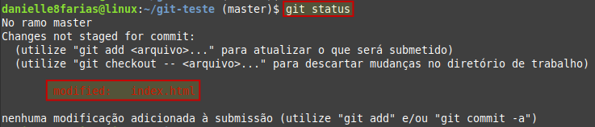
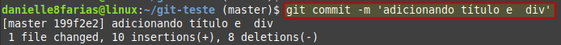
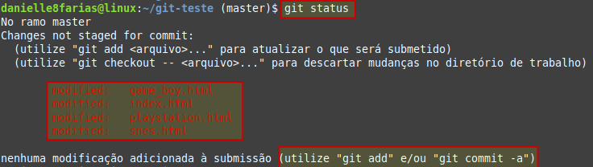
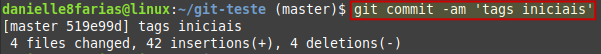
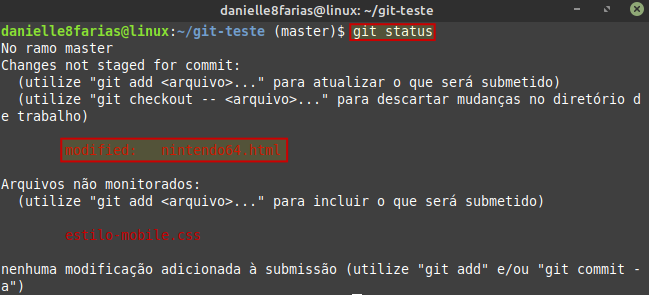

Para atualizar um arquivo que foi modificado no repositório, existem dois caminhos.
$ git add <nome_do_arquivo>
- $ indica que você deve usar o usuário comum para fazer essa operação.
- add para adicionar ao index o(s) arquivo(s) que virá(ão) em seguida.
- digite o nome do arquivo sem os sinais < >.
seguido do commit
$ git commit -m 'sua mensagem aqui'
Exemplo:
Aqui temos o arquivo index.html que foi modificado.

Adicionando o arquivo com o comando git add
E fazendo o commit
Atalho
Também é possível fazer o commit das modificações através de um atalho:
$ git commit -am 'adição de modificação do arquivo'
O parâmetro -a adiciona todos os arquivos que foram modificados, sem a necessidade de adicionar cada um individualmente.
Exemplo:
Aqui temos vários arquivos modificados
Usando o atalho
Observação:
-
É importante notar que se houver um arquivo novo (ainda não rastreado pelo Git) o comando
git commit -amfaz a adição do commit apenas dos arquivos já rastreados que foram modificados.
Exemplo:
Temos um arquivo que foi modificado (nintendo64.html) e um arquivo novo (estilo-mobile.css) ainda não rastreado.

Usando o atalho git commit -am podemos perceber que somente o arquivo modificado foi mandado ao index.